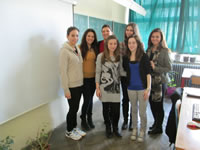
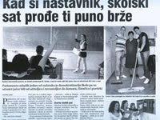
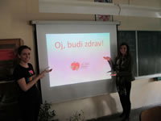

Tijekom sve tri aktivnosti na otvorenom, građani će moći podržati peticiju svojim potpisom!
PETICIJA
SMATRAM DA PROGRAM NASTAVE TJELESNOG ODGOJA U ŠKOLAMA TREBA OBUHVATITI I ALTERNATIVNE SPORTOVE (cirkuske vještine, ples na svili,step…)
IZVJEŠĆE O AKTIVNOSTIMA U SKLOPU DODATNE NASTAVE "EUROPA-JUČER, DANAS, SUTRA" U ŠK.GOD. 2012./2013.
Dodatna nastava "Europa - jučer, danas, sutra", već drugu godinu za redom provodi se u sklopu aktivnosti udruge "Parlament mladih grada Zagreba", koja djeluje kao institucionalni oblik rada s mladima s ciljem intenziviranja suradnje između učenika osnovnih i srednjih škola, studenata visokoškolskih ustanova i općenito mladih ljudi s jedne strane, nevladinih udruga s druge strane i tijela gradske uprave i samouprave s treće strane. Krajnji je cilj uključivanje mladih u poslove zajednice i povećanje  njihova utjecaja u procesu donošenja odluka.
Tijekom svog rada, Parlament mladih grada Zagreba provodi niz aktivnosti u sklopu raznih projekata što su nastali i provode se unutar samog Parlamenta i/ili na nivou Nacionalnog saveza parlamenta mladih RH (NSPMRH).
Tako smo 31.10.2012. tradicionalno već četvrtu godinu za redom održali još jednu "Zamjenu uloga" u sklopu projekta "Demokratizacija odnosa u školi" koji je usmjeren poboljšanju komunikacije između učenika, profesora i svih drugih zaposlenika ustanove uz poštivanje prava i dostojanstva svake osobe.
Dodatna nastava- "Europa – jučer, danas, sutra" realizirana je u školskoj godini 2012./2013. kroz 70 školskih sati. Nastavu je pohađalo sve skupa 20 učenika i učenica Treće ekonomske škole. Ove godine naglasak je stavljen na sve ono što nas očekuje u EU, budući da je 01.07.2013. i RH postala njena 28. članica pa su u tom smjeru bile organizirane i provedene aktivnosti. Pokušali smo naći odgovore na pitanja o tome kako funkcioniraju institucije EU, koje su prednosti i nedostaci ulaska RH u EU i posebno kakve su mogućnosti obrazovanja i zapošljavanja mladih iz RH u EU.
Tako se u drugom polugodištu šk.god. 2012./2013. dogodila suradnja sa "Udrugom Ostvarenje" iz Zagreba te smo s njima krenuli u realizaciju radionica o europskom građanstvu, europskim vrijednostima, općenito o EU i na kraju o mogućnostima osobnog razvoja i usavršavanja mladih pozitivnim doprinosom kroz volontiranje. U sklopu jedne radionice koja je imala za temu program "Mladi na djelu", došli smo do ideje da napišemo projekt koji bi prijavili na financiranje za podakciju "Inicijativa mladih". Tako smo napisali projekt pod nazivom "Oj, budi zdrav!" te projektnu prijavu poslali na natječaj 02.05.2013. Nedugo zatim, 05.07.2013. primili smo obavijest agencije "AMPEU" da je projekt prihvaćen, a sve planirane aktivnosti koje on obuhvaća bit će provedene u školskoj godini 2013./2014.
ZAMJENA ULOGA
Dana, 31.10.2013. (četvrtak) u našoj školi održala se po peti puta, "Zamjena uloga" u sklopu projekta "Demokratizacija odnosa u školi". Aktivnost su organizirali učenici-sudionici dodatne nastave "Europa jučer , danas , sutra " koju provodi udruga "Parlament mladih grada Zagreba", u suradnji s voditeljicom aktivnosti Slavicom Falamić, prof.
Taj dan učenici su održali nastavu preuzimajući uloge svojih profesora koji su njih zamijenili u školskim klupama preuzimajući uloge učenika, okušali se u ulogama ravnatelja škole, tajnice, voditelja turnusa, računovođe, učeničkog referenta, portira, čistačice/čistača ili školskog domara.
Cilj ovog projekta je preuzimanje odgovornosti i obaveza u skladu sa dodijeljenim ulogama, kako bi se pokušalo ovladati vještinama rukovođenja, organizacije, koordinacije rada u srednjoškolskoj ustanovi, pripreme i izvedbe nastavnog sata, a sve  u svrhu poboljšanja odnosa između učenika i profesora kao i svih ostalih sudionika odgojno-obrazovnog rada, što doprinosi i boljem i kvalitetnijem funkcioniranju ustanove.
Preuzimajući navedene uloge, uz prethodnu pripremu, učenici su pokazali koliko su dorasli visini zadatka te svojim idejama i kreativnošću u skladu sa Statutom škole i Pravilnikom o kućnom redu pridonijeli poboljšanju kvalitete nastave kao odgojno-obrazovnog procesa.
Učenici su se u periodu od 1.10 do 5.10 trebali javiti profesoru s kojim su željeli zamijeniti ulogu, upoznati se s nastavnom jedinicom ili jedinicama planiranima za taj dan i izraditi pripremu. Uz redovne konzultacije i savjete predmetnog profesora koristeći vlastite ideje i kreativnost, bez imitacije ili glume, trebali su održati nastavu po rasporedu koji taj dan predmetni profesor ima. U istom periodu trebali su se javiti nekom od članova nenastavnog osoblja ili uprave škole kojeg žele zamijeniti.
Za to vrijeme profesori su bili u školskim klupama, pratili kako učenik predaje, i prisjetili se svojih srednjoškolskih dana.
Napominjemo da je svaki nastavni sat imao formu od uvoda, najave teme, razrade teme do zaključnog dijela koji često uključuje i ponavljanje naučenog . Učenici koji su preuzeli ulogu profesora ujedno su imali zadatak odgovorno pristupiti poslu kako bi taj nastavni dan bio uspješno odrađen, a ne izgubljen.
Ostali učenici preuzeli su na sebe odgovornost da poštivanjem učenika u ulozi profesora pridonesu da se zamjena uloga održi a to je isključivalo ometanje nastave, upadice, ismijavanje i slično, budući da je učenicima u ulozi profesora u dogovoru sa predmetnim profesorom dana mogućnost ocijeniti njihovo sudjelovanje kroz aktivnost na satu.
Svaki je učenik koji se našao u odabranoj ulozi nakon izvršenog zadatka, ostavio pismeni trag što je taj dan radio, s kojim problemima se susreo i iznio svoje prijedloge ili ideje za poboljšanje kvalitete nastave ili bolje funkcioniranje ustanove.
PROJEKT "OJ, BUDI ZDRAV!"
U drugom polugodištu šk.god. 2012./2013. udruga "Parlament mladih grada Zagreba"(PMZG) koja djeluje ujedno i u sklopu dodatne nastave "Europa – jučer, danas, sutra" ostvarila je suradnju sa "Udrugom Ostvarenje" iz Zagreba te s njima krenula u realizaciju radionica o europskom građanstvu, europskim vrijednostima, općenito o EU i na kraju o mogućnostima osobnog razvoja i usavršavanja mladih pozitivnim doprinosom kroz volontiranje. U sklopu jedne radionice koja je imala za temu program "Mladi na djelu", došli smo do ideje da napišemo projekt koji bi prijavili na financiranje za podakciju "Inicijativa mladih". Tako smo napisali projekt pod nazivom "Oj, budi zdrav!"  te projektnu prijavu poslali na natječaj 02.05.2013. Nedugo zatim, 05.07.2013. primili smo obavijest agencije "AMPEU" da je projekt prihvaćen, a sve planirane aktivnosti koje on obuhvaća bit će provedene u školskoj godini 2013./2014.
"Oj, budi zdrav!" je projekt koji su pokrenule učenice Treće ekonomske škole u sklopu svog rada u Parlamentu mladih grada Zagreba jer žele potaknuti svoje suučenike a i ostale mlade u lokalnoj zajednici da se upoznaju i motiviraju za bavljenjem drugačijim i zabavnijim fizičkim aktivnostima. Nakon što će provesti anketu o prehrani i fizičkim aktivnostima srednjoškolaca na razini svoje srednje škole, biti će organizirane 3 manifestacije/aktivnosti na 3 različite lokacije na otvorenom u gradu Zagrebu (Jarun, Maksimir, Sljeme) na kojima će se prezentirati: žongliranje, ples/akrobacije na svili, krav maga, capoiera, street runing, yoga, pilates... Tijekom samih manifestacija će dijeliti sudionicima i ostalim zainteresiranim zdrave obroke koje su sami pripemili.
Nakon provedbe aktivnosti izdati će publikaciju koja će im poslužiti da upoznaju javnost s problemom fizičke neaktivnosti i nezdrave prehrane srednjoškolaca, te će također lobirati kod ravnatelja škole i Ministrastva znanosti, obrazovanja i sporta da se uvedu promjene u školski program tjelesnog odgoja kako bi se promijenio negativni stav učenika da je tjelesni, odnosno fizička aktivnost dosadna i nezanimljiva.
Naš projekt se izravno bavi promocijom zdravog načina života kroz aktivnosti na otvorenom te time odgovara godišnjem prioritetu programa Mladi na djelu.